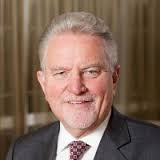

Sir Rodney Malcolm Aldridge OBE,
FRSA (born 7 November 1947) is the founder and former executive chairman of
Capita, a British company specialising in business process outsourcing. He
founded and led Capita from a start up in 1984 to become a member of the FTSE
100 index. He is a former Chair of V, the charity launched in May 2006 which
aims to inspire and engage over 1 million new youth volunteers. Aldridge is a
patron and, former trustee of the Prince’s Trust and is currently Chairman of
the Aldridge Foundation, an educational charity which sponsors academy schools
in England and champions entrepreneurial education.
As well as chairing the
Aldridge Foundation, in January 2007 he was appointed Chairman of The Lowry, a
theatre and arts venue in Salford. He is also a member of the Prince's Charities
Council at the invitation of the HRH Prince of Wales, a patron of the Prince’s
Trust, Non-executive Director of Equiniti, a Director of Cornerstone and a
Director of Constellation Healthcare Technologies.
Aldridge founded and led the
Capita Group from its formation in 1984 until 2006. During his time as chair the
group expanded to a FTSE 100 company employing 27,000 as well as profits
increasing each year to almost £200 million in 2006.
In 1987 he led the
management buyout (MBO) of the group from the Chartered Institute of Public
Finance and Accountancy (CIPFA) and the flotation of Capita on the unlisted
securities market (USM) in 1989 valued at £8 million.
In 2006 Aldridge resigned as
Executive Chairman of Capita after it was revealed that he had lent the Labour
Party £1 million.The loan, which was secret at the time it was made, was
controversial, in part, because Capita is a major public sector supplier.
Aldridge retired from his position as Chairman of Capita in July 2006.Prior to
Capita, Aldridge worked in local government for 10 years with East Sussex County
Council, Brighton Borough Council, Crawley Borough Council and West Sussex
County Council, joining CIPFA in 1974, ultimately becoming its Technical
Director. At the launch announcement of Ada, the National College for Digital
Skills, he was also listed as Chair.
Aldridge is a former Chair
of V, the charity launched in May 2006 which aims to inspire and engage over 1
million new youth volunteers. He is a patron and former trustee of The Prince's
Trust and was the Chairman of the Confederation of British Industry’s (CBI)
public services strategy board at its inception in 2003 through to July 2006.
He
is a former Non- Executive Director on the Ministerial Advisory Board of the
Foreign and Commonwealth Office (FCO) Services, an Executive Agency of the FCO.
In 2009, he took up a role as Chair of the Department of Health (United Kingdom)
'Dance Champions Group', aiming to encourage 100,000 more adults to take up
dance as a form of physical activity, with members such as Arlene Phillips and
Lisa Snowdon.